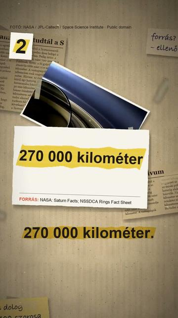

Megnézem a YouTube-on3 dolog, amit nem tudtál a Szaturnuszról
Röviden: A NASA szerint a Szaturnusz az egyetlen bolygó a Naprendszerben, amelynek átlagos sűrűsége kisebb a vízénél: 687 kg/m³, szemben a víz 1000 kg/m³-ével.
A NASA szerint a Szaturnusz az egyetlen bolygó a Naprendszerben, amelynek átlagos sűrűsége kisebb a vízénél: 687 kg/m³, szemben a víz 1000 kg/m³-ével. Főleg hidrogénből és héliumból áll, térfogata a Földének kb. 764-szerese. A gyűrűk jég- és kődarabokból állnak. A fő gyűrűk átmérője több mint 270 000 km, függőleges vastagságuk viszont jellemzően csak nagyjából 10 méter; a halvány E-gyűrű a bolygó középpontjától 480 000 km-ig ér. Az északi pólus körül hatszög alakú futóáramlás kering: a Cassini-szonda mérései alapján nagyjából 30 000 km széles, a szél benne kb. 322 km/h sebességgel fúj. A hatszöget a Voyager-szondák felvételein fedezték fel az 1980-as évek elején. Egy nap a Szaturnuszon kb. 10,7 óra.
Az összes rész forrásokkal: https://valoban.pages.dev/
Források
- NASA: Saturn Facts
- NASA NSSDCA: Saturn Fact Sheet
- NASA NSSDCA: Saturnian Rings Fact Sheet
- NASA JPL: Cassini Obtains Best Views of Saturn Hexagon (2013)
- NASA JPL: Spring Reveals Saturn's Hexagon Jet Stream
5 forrás · Hogyan ellenőrzünk?
Hibát találtál? Írd meg nekünk, megnézzük.
Képek és kreditek
• a Szaturnusz a Cassini felvételén (2008) – NASA / JPL / Space Science Institute, Public domain (https://creativecommons.org/publicdomain/mark/1.0/) https://commons.wikimedia.org/?curid=7228953
• a Szaturnusz és a Föld méretének hozzávetőleges összevetése – NASA, Public domain (https://creativecommons.org/publicdomain/mark/1.0/) https://commons.wikimedia.org/?curid=5876488
• a Szaturnusz a Cassini felvételén (2004) – NASA / JPL / Space Science Institute, Public domain (https://creativecommons.org/publicdomain/mark/1.0/) https://commons.wikimedia.org/?curid=1756414
• a gyűrűk élükkel felénk (Hubble, 1995) – Phil Nicholson (Cornell University) / NASA, Public domain (https://creativecommons.org/publicdomain/mark/1.0/) https://commons.wikimedia.org/?curid=147564259
• a gyűrűk ellenfényben (Cassini-mozaik, 2013) – NASA / JPL-Caltech / Space Science Institute, Public domain (https://creativecommons.org/publicdomain/mark/1.0/) https://commons.wikimedia.org/?curid=29592312
• a hatszög alakú futóáramlás (Cassini, 2012) – NASA / JPL-Caltech / Space Science Institute, Public domain (https://creativecommons.org/publicdomain/mark/1.0/) https://commons.wikimedia.org/?curid=22913797
• a Szaturnusz és gyűrűi felülről, középen a hatszöggel (Cassini, 2013) – NASA / JPL-Caltech / SSI / Cornell, Public domain (https://creativecommons.org/publicdomain/mark/1.0/) https://commons.wikimedia.org/?curid=29232326
A képek módosítva: 9:16-ra kivágva, átméretezve, kameramozgással, ráégetett felirattal.